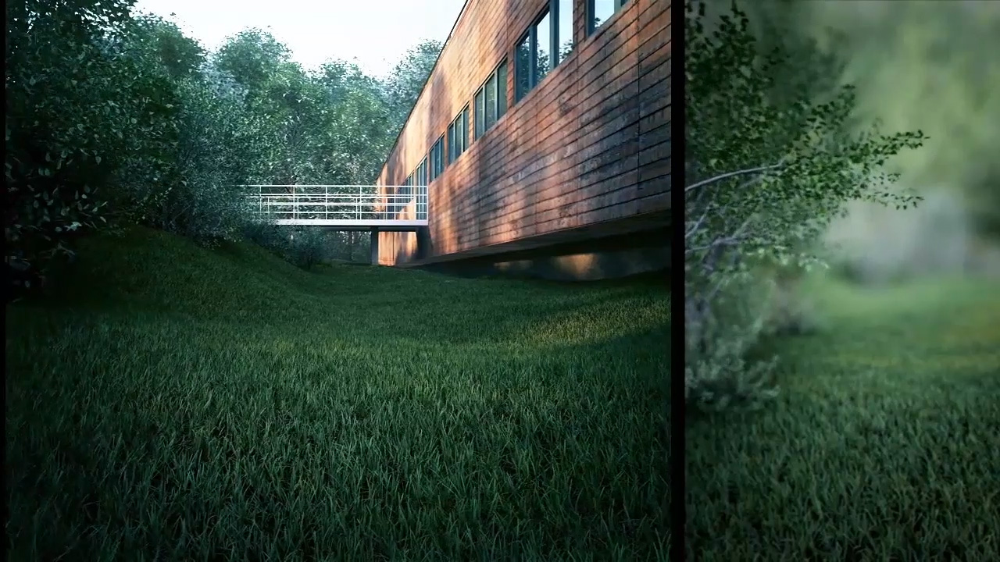
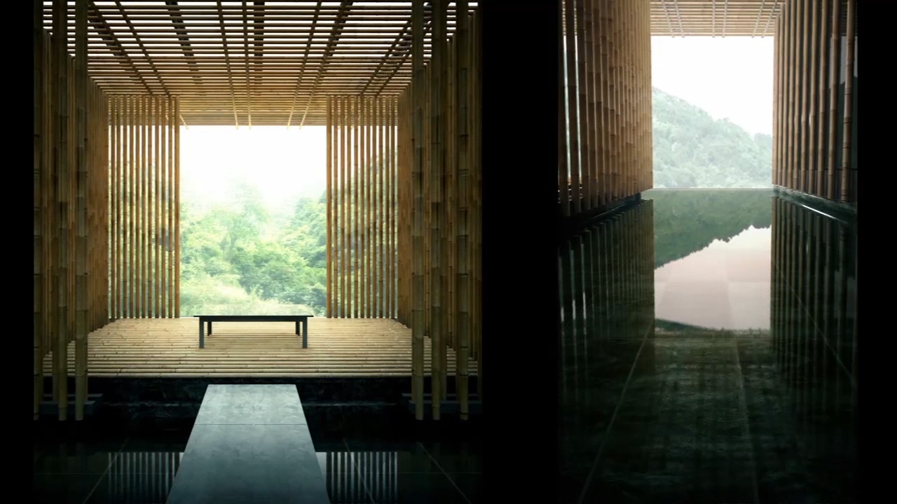
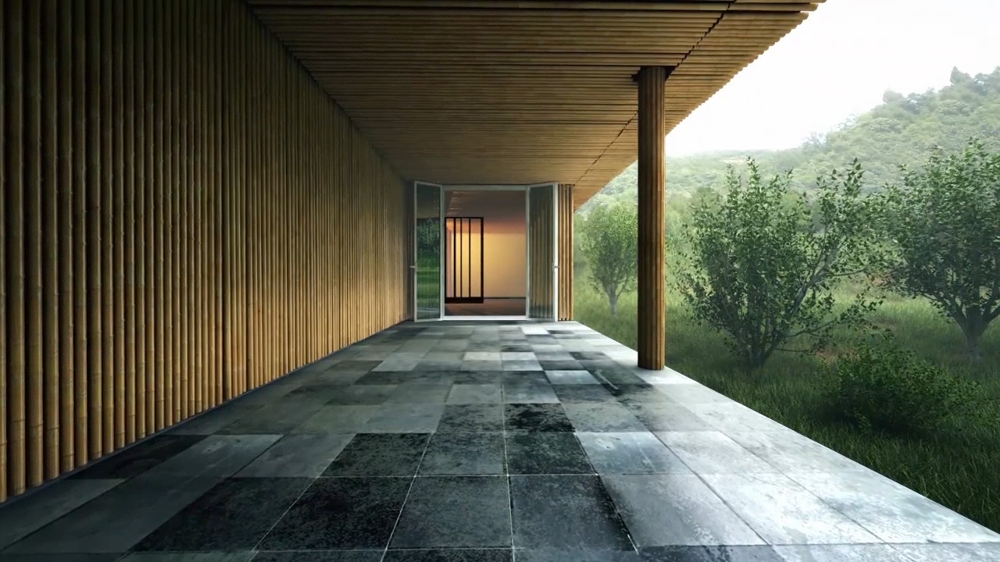
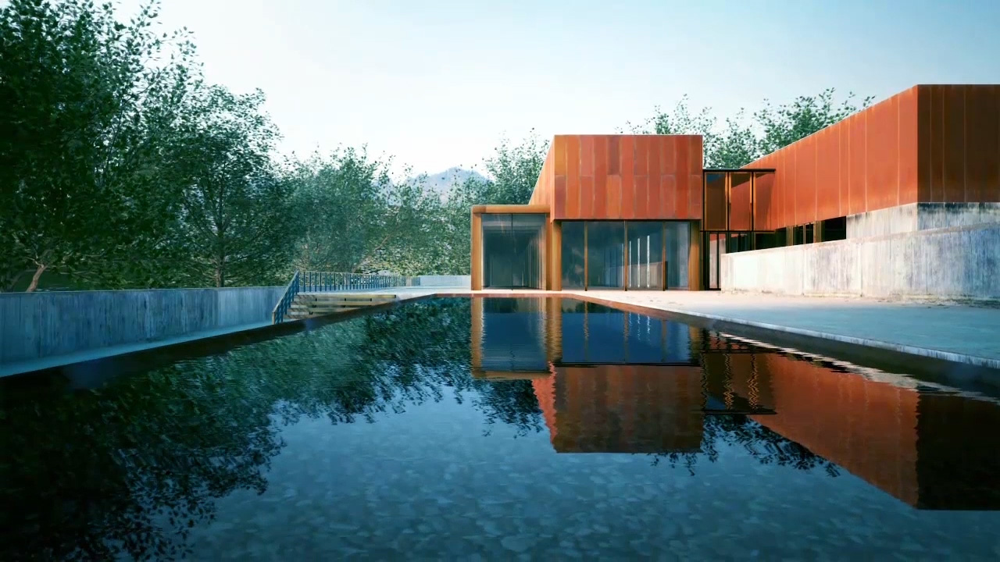
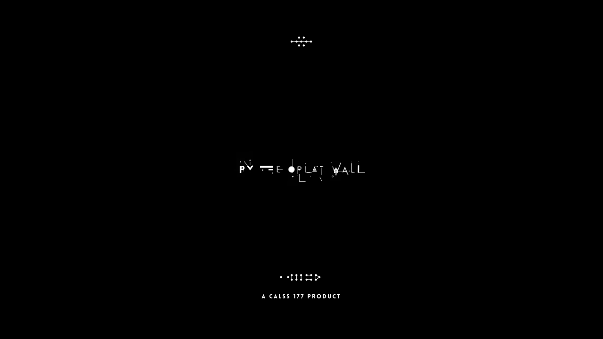
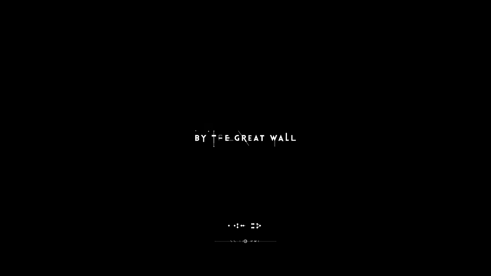

By The Great Wall
In 2012,we got a chance to make an architectural visualisation animation,which is about a community of awarded architecutral collections.We spent 5 weeks with 30 computers to complete this project.We went through a really tough time and met a lot of challenges, but we made it.For us,that is something really worth to be proud of.

Except the challenge of simulating the realistic textures,we also faced another problem,which was simulating the trees that is shaken by the wind.



It took another 5 days to finish up the ending sequence.We wanted to maintain slow pace through whole animation,so we choose the geometric and simple style for this ending sequence.
